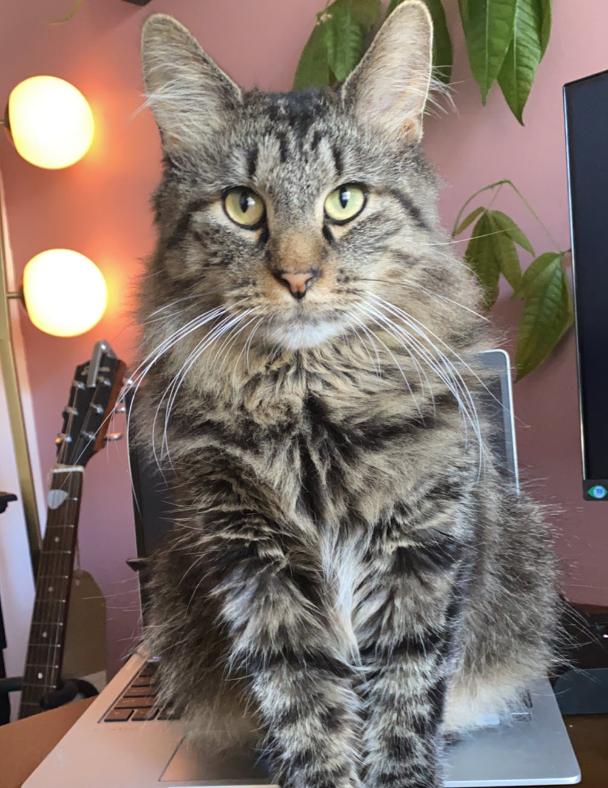
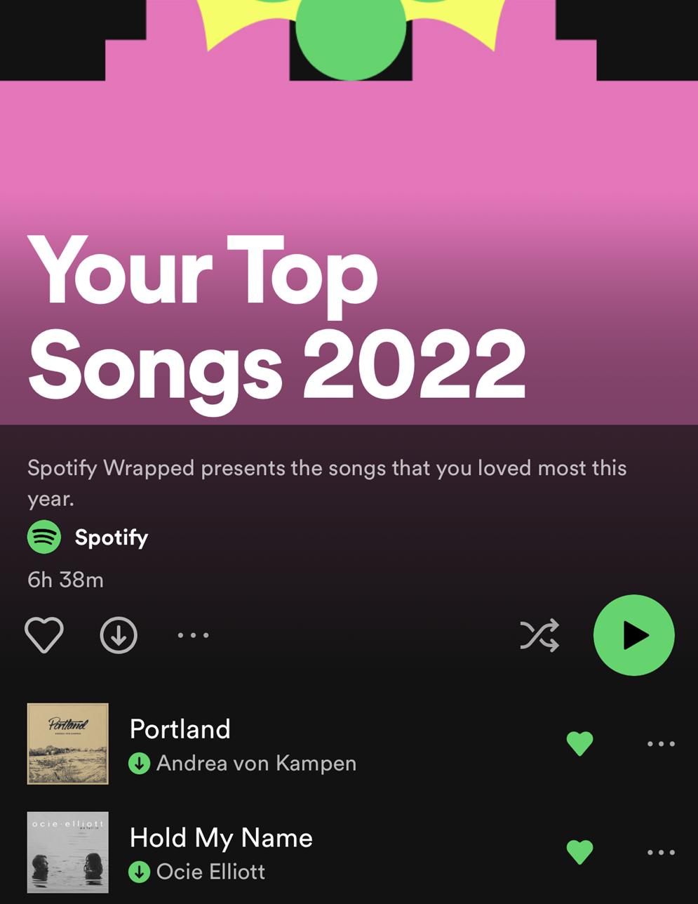
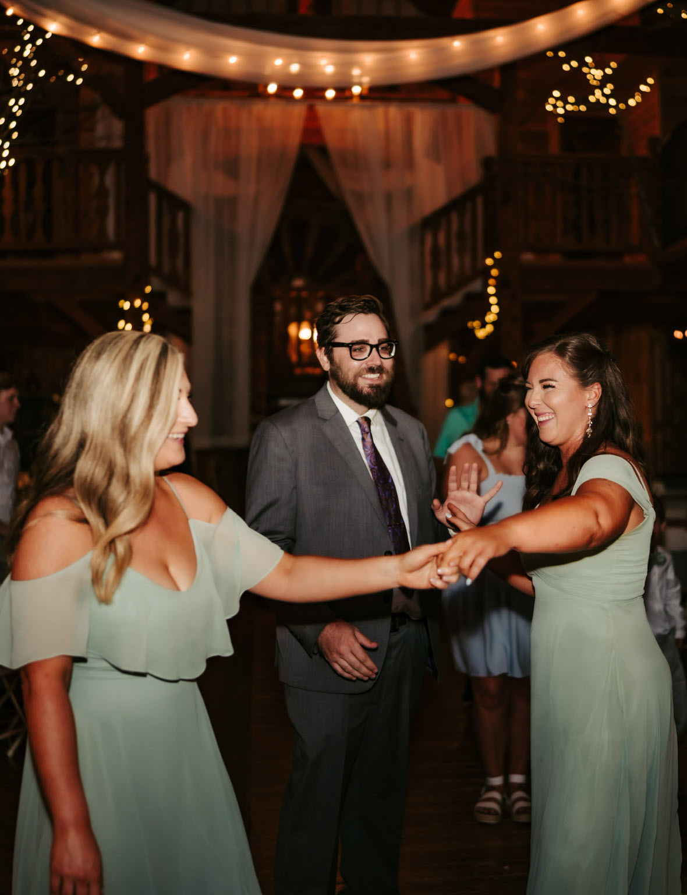

Greetings!
I (Lauren Graves) am excited you found me and eager to share a bit of my life with you.
I work for O'Reilly Auto Parts as a Busines Systems Analyst and am approaching year 5 with the company. I own a few rental properties on the side and am constantly looking to improve them. I don't strive to have so many that it becomes unenjoyable. I just like restoring them to their prime state and ensure confortable living for my tenants.
I'm currently in school working towards my ACS. This online profile "shows off" what I've learned this FA22 semester in Web Dev, from the skills standpoint. It also tells you a bit more about my background and education and my professional aspirations.
A little about me as a human...
I have a cat, Moses
He came into my life at the perfect time, as most pets do. I assumed "he" was a "she", but his first vet visit cleared things up. I'm still adapting to Moses, as his previous name was Mona. But that's okay. Still the same cat.
I love when Spotify recaps
There's nothing better to watch yourself evolve through music throughout the course of a year. What I listened to in January is vastly different than what I'm listening to in December the same year.
I like my family, a lot
If I could have fit a picture of my whole family in this little div I would have. So settling for a pic with my two favorite people; Brooke and Ben; sister and partner. Now I have to fill up this extra space because these images have different heights. Here's some food for thought:
"No problem can be solved from the same consciousness that created it."
Reasons to Visit Tybee in the Fall
When the heat of summer begins to taper off and a cool ocean breeze sweeps over Tybee Island, visitors head our way to enjoy mild beach temperatures, lighter crowds, fresh seafood and more.
Beaches of Tybee Island
- Little Tybee Beach
- Black River Beach
- South Beach
- Mid Beach
- North Beach
Tybee Post Music Festival
NOVEMBER 12, 2022
Join us for the 1st Annual Tybee Post Music Fest, featuring 9 bands that span multiple genres of music.
Can't Miss Activities for First Time Visitors
- Tybee Island Light Station
- Fort Pulaski National Monument
- Sea Kayak Georiga
- The Sugar Shack
- Captain Derek's Dolphin Adventures